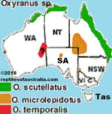
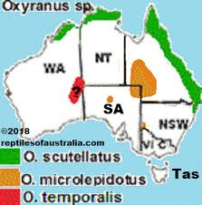

Распространение
Распространение Ареал обитания вида — побережье Сверной и Северо-Западной Австралии (от Брисбена до Дарвина); а его подвид Oxyuranus scutellatus canni, открытый в 1956 г., водится на юго-востоке Папуа — Новой Гвинеи.
Распространение Ареал обитания вида — побережье Сверной и Северо-Западной Австралии (от Брисбена до Дарвина); а его подвид Oxyuranus scutellatus canni, открытый в 1956 г., водится на юго-востоке Папуа — Новой Гвинеи.